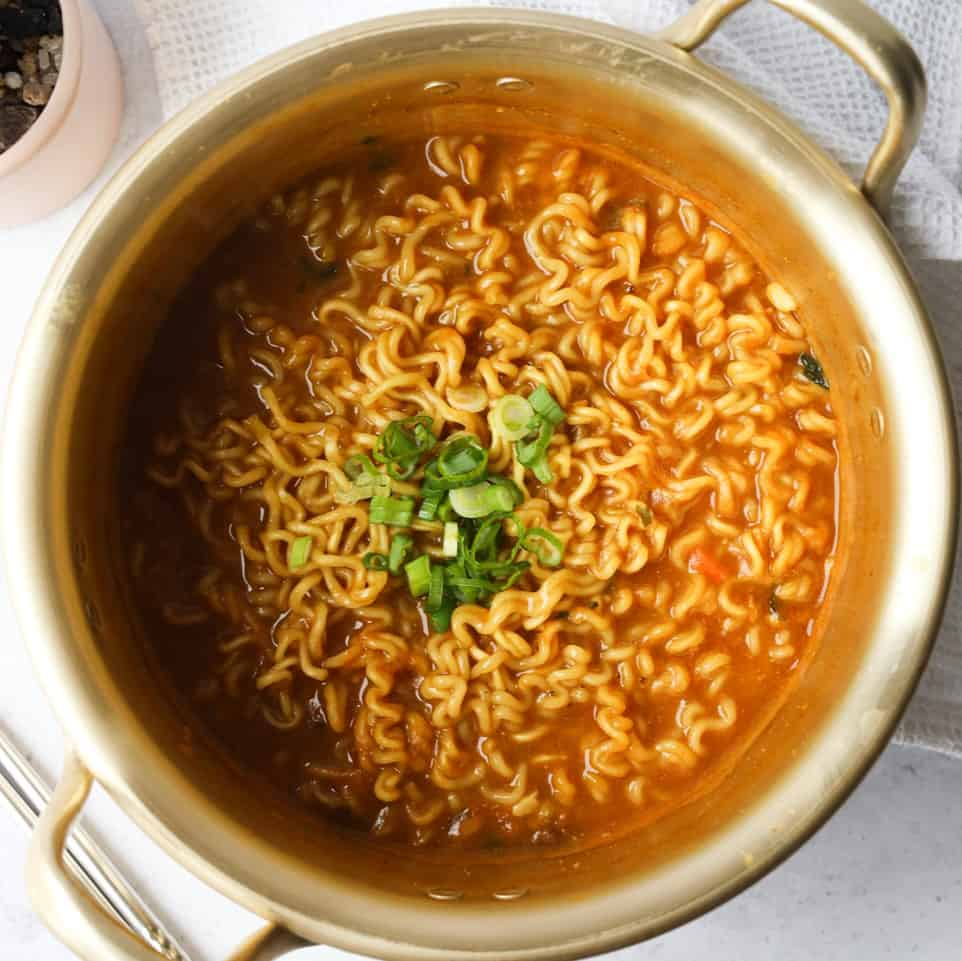

Instant Ramen

Description
This is a basic instant ramen recipe, if you would like to consider it to be one. The items needed are the following:
- Instant noodle pack.
- Green onion.
- 1 egg
Here are the preparation steps:
- Boil water in small pot
- Place noodle and seasoning in water
- Once noodles half cooked, crack egg on top of noodles
- Once cooked pour in bowl
- Chop green onions place on top of noodles.